![Vi Na Vi]()
Vi Na Vi
ENGINEERING & TECHNOLOGIES
Ingénierie – Instrumentation – Automatisation – SCADA
Ingénierie – Instrumentation – Automatisation – SCADA

Grâce à leurs nombreuses compatibilités et options de communication, les automates de télémétrie Ewon offrent une plateforme très flexible pour la télémétrie et la télégéstion des installations industrielles.
Ils permettent l’acquisition de données via les automates connectés ou au moyen de leurs propres modules d’entrées-sorties.
Ils peuvent fonctionner de manière entièrement autonome grâce à leur interface Web intégrée, ou être supervisés via Talk2M, le service Cloud sécurisé d’Ewon dédié au VPN industriel.
Ils s’intègrent également dans des systèmes de supervision multisites tels que TopKapi, Wonderware, VTScada ou tout autre SCADA. Les échanges de données sont entièrement sécurisés grâce aux passerelles VPN eFive ou au Cloud Talk2M.
Vi Na Vi déploie, configure et intègre les solutions Ewon dans des environnements industriels complexes, en assurant :
Thanks to their wide compatibilities and communication options, the Ewon telemetry PLCs provide a highly flexible platform for industrial telemetry and remote management.
They allow data acquisition via connected PLCs or through their own I/O modules.
Ewon PLCs can operate independently via their integrated web interface, or be supervised through Talk2M, Ewon’s secure industrial VPN cloud service.
They also integrate into multisite SCADA platforms such as TopKapi, Wonderware, VTScada or any other SCADA system. Data exchanges are fully secured through VPN eFive gateways or the Talk2M Cloud.
Vi Na Vi deploys, configures and integrates Ewon solutions in complex industrial environments, ensuring:
Tous domaines nécessitant Télémétrie ou Télégéstion.
All sectors requiring Telemetry or Remote Management.
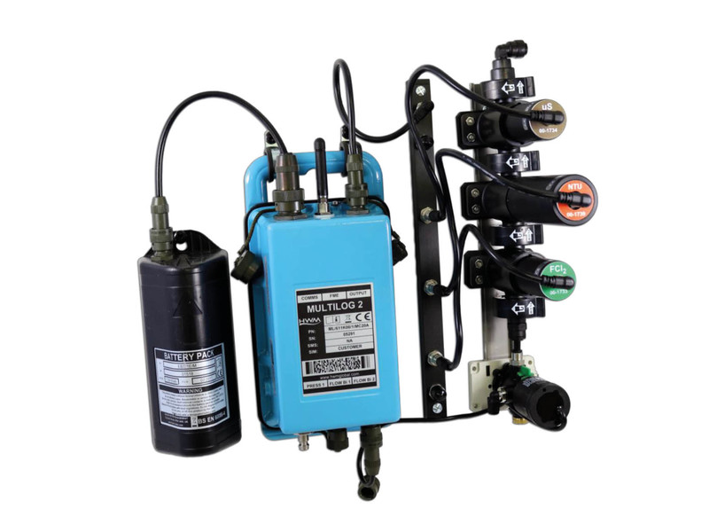
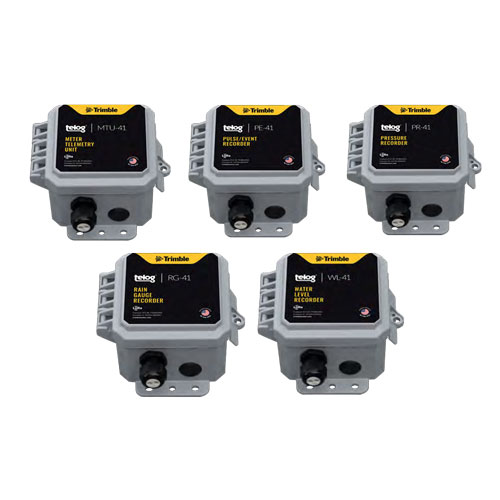
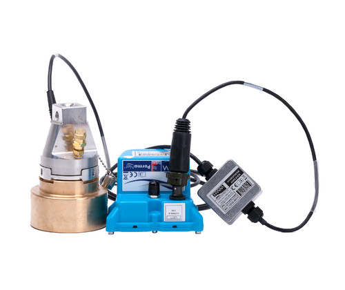
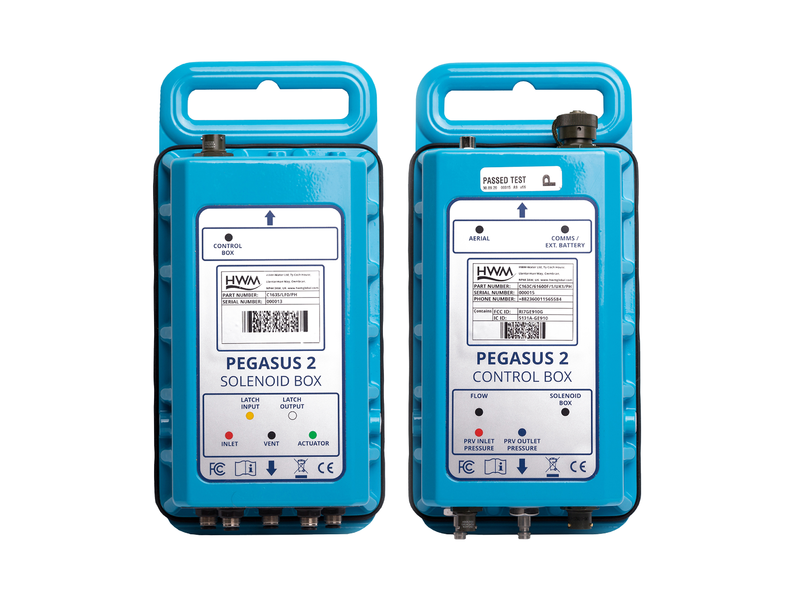
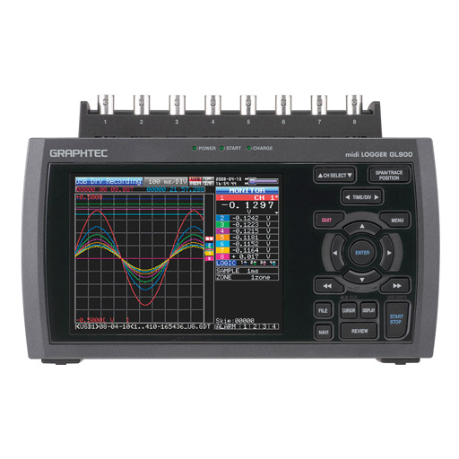
Les enregistreurs de données que nous proposons sont conçus pour répondre aux exigences élevées des environnements industriels, y compris ceux présentant des risques potentiellement explosifs, comme les réseaux d’eaux usées, les installations de traitement de l’eau ou encore les infrastructures gazières.
Ils sont équipés de modems cellulaires de dernière génération compatibles LTE-M / NB-IoT / LORAWAN, garantissant une communication fiable même dans des zones difficiles, éloignées ou souterraines.
Plusieurs modèles existent selon les applications et les types de capteurs ou d'actionneurs à connecter, offrant une grande autonomie grâce à des batteries internes longue durée et des capacités avancées de traitement et de communication.
Ils s’intègrent également dans des systèmes de supervision multisites tels que TopKapi, Wonderware, VTScada ou tout autre SCADA.
Vi Na Vi déploie, configure et intègre les différents enregistreurs autonomes avec :
The data loggers we offer are designed to meet the demanding requirements of industrial environments, including areas with potentially explosive atmospheres such as wastewater networks, water treatment facilities, or gas distribution systems.
They are equipped with latest-generation LTE-M / NB-IoT / LORAWAN cellular modems, ensuring reliable communication even in challenging, remote or underground locations.
Various models are available depending on the application and the required sensors or actuators. All units offer long-lasting internal battery autonomy and advanced processing and communication capabilities.
They also integrate into multisite SCADA platforms such as TopKapi, Wonderware, VTScada or any other SCADA system.
Vi Na Vi deploys, configures and integrates the various standalone recorders with :
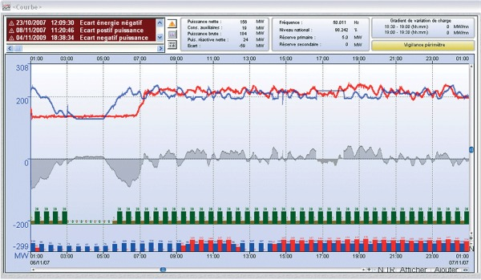
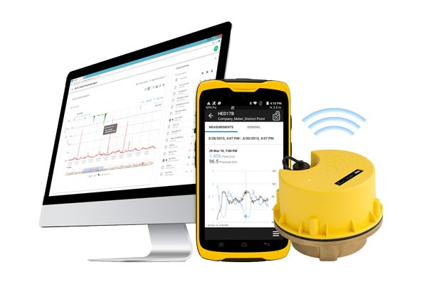
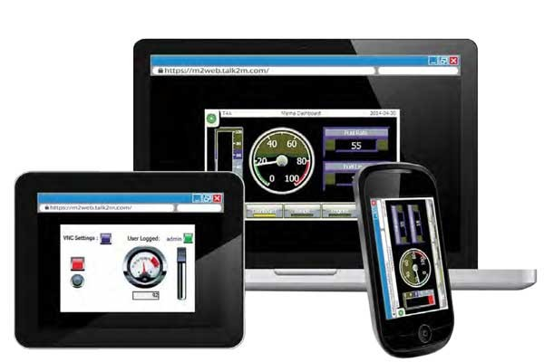
Les systèmes SCADA (Supervisory Control And Data Acquisition) sont essentiels pour surveiller, contrôler et optimiser les infrastructures industrielles, énergétiques et environnementales. Ils permettent de collecter les données terrain, de les analyser en temps réel, puis de piloter les équipements à distance, même lorsque les installations sont réparties sur de vastes territoires ou situées dans des zones difficiles d’accès.
Un SCADA assure notamment :
Il s’agit d’un outil indispensable pour moderniser les installations, réduire les coûts d’exploitation et améliorer la fiabilité des opérations.
Les outils de supervision regroupent l’ensemble des solutions qui permettent de surveiller l’état des installations, d’analyser les données et d’aider à la prise de décision. Ils transforment des données brutes en informations utiles et exploitables au quotidien.
Vi Na Vi accompagne les organisations dans la mise en œuvre complète de leurs systèmes de supervision et SCADA avec la suite logicielle TOPKAPI, en combinant expertise technique, connaissance terrain et maîtrise des technologies IoT et industrielles.
SCADA (Supervisory Control And Data Acquisition) systems are essential for monitoring, controlling, and optimizing industrial, energy, and environmental infrastructures. They collect field data, analyze it in real time, and allow remote control of equipment, even when installations are spread over large areas or located in hard-to-reach zones.
A SCADA system provides:
It is a key tool to modernize installations, reduce operating costs, and improve reliability.
Vi Na Vi supports organizations in the complete implementation of their supervision and SCADA systems using the TOPKAPI software suite, combining technical expertise, field knowledge, and mastery of IoT and industrial technologies.
Typical applications for supervision and SCADA systems include:
TOPKAPI est une suite logicielle modulaire et ouverte permettant de répondre aussi bien aux besoins d’applications traditionnelles de supervision (offre de type « SCADA ») qu’aux besoins plus récents de plateformes de services de données avec diverses connectivités IoT (portails Web, en mode Cloud ou propriétaire).
Avantages principaux :
TOPKAPI is a modular and open software suite designed to meet both traditional supervision needs (classic “SCADA”) and modern requirements for data service platforms with various IoT connectivity options (Web portals, Cloud-based or private).
Main advantages:
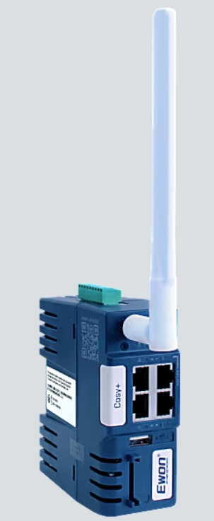
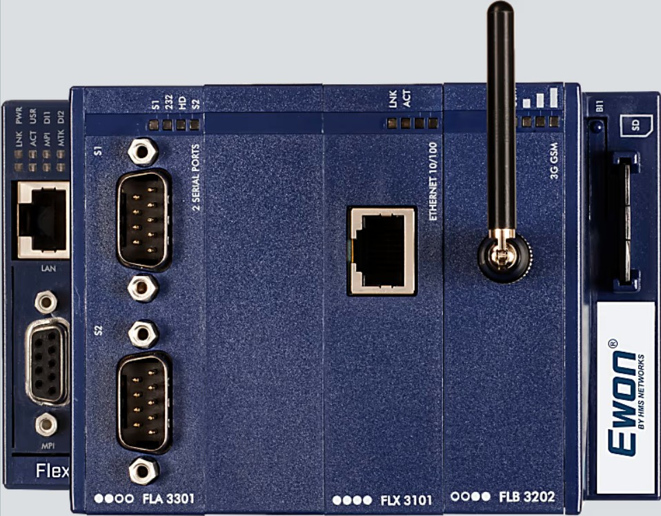
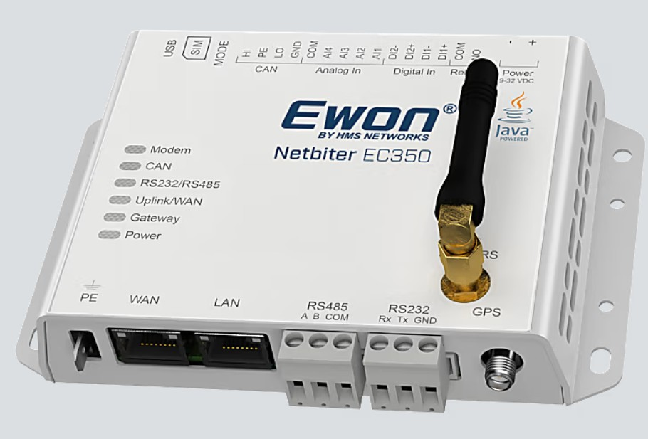
La famille de routeurs-passerelles Cosy permet d’accéder à distance aux équipements industriels — automates, interfaces opérateur, caméras ou autres systèmes de contrôle — tout en garantissant un haut niveau de sécurité. Cette capacité de visualisation et de diagnostic à distance réduit les interventions sur site, optimise les coûts de support et améliore la disponibilité des installations.
L’ensemble des routeurs Cosy est administré via Talk2M, une plateforme Cloud VPN sécurisée (disponible en version gratuite ou professionnelle selon les besoins). Ce service centralisé simplifie la gestion, la supervision et la mise en service des équipements.
Le modèle Cosy+, dernière évolution de la gamme, introduit un niveau de protection renforcé en intégrant une chaîne de confiance au cœur même de l’architecture matérielle (« Hardware Root of Trust »). Cette approche renforce la cybersécurité et rend l’accès distant encore plus fiable pour les environnements les plus critiques.
Les routeurs Cosy constituent ainsi une solution de référence pour une télémaintenance industrielle moderne, flexible et sécurisée.
Vi Na Vi déploie, configure et intègre les solutions Ewon dans des environnements industriels complexes, en assurant :
The Cosy family of remote access routers allows secure connectivity to industrial equipment — PLCs, HMIs, cameras, and other control systems — from anywhere. This remote visualization and troubleshooting capability significantly reduces on-site interventions, lowers support costs, and improves overall system availability.
All Cosy routers are managed through Talk2M, a secure Cloud-based VPN platform available in both free and professional editions. This centralized service streamlines device management, supervision, and commissioning.
The latest addition to the range, Cosy+, brings enhanced protection by embedding a hardware-level trust chain (“ Hardware Root of Trust ”). This architecture strengthens cybersecurity and ensures highly reliable remote access for the most critical environments.
Cosy routers are therefore an ideal solution for modern, flexible, and secure industrial remote maintenance.
Vi Na Vi deploys, configures and integrates Ewon solutions in complex industrial environments, ensuring:
Tous domaines d’activité pour des besoins de Télémétrie et de Télégéstion par des opérateurs d’installations techniques :
Typical applications for remote access and remote management:
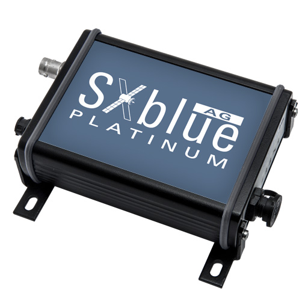
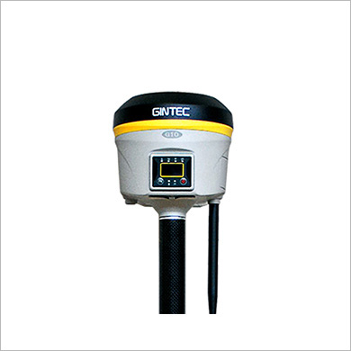
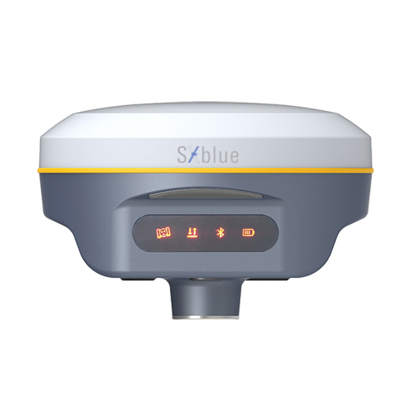
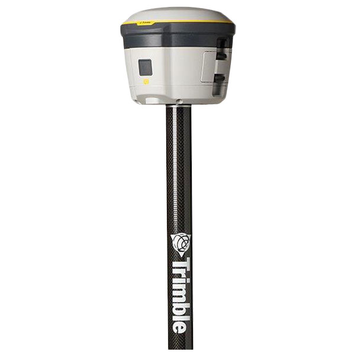
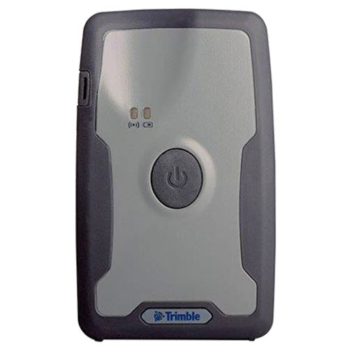
La géolocalisation moderne joue un rôle essentiel dans la cartographie, la gestion d’actifs, la surveillance environnementale et les opérations terrain. Grâce à des récepteurs GNSS de nouvelle génération, il est possible d’obtenir des mesures de positionnement fiables et précises, adaptées aux environnements les plus exigeants. Compacts, robustes et faciles à intégrer aux outils numériques actuels, ces récepteurs offrent un positionnement en temps réel pour des applications industrielles, urbaines ou environnementales.
Ils se connectent aisément en Bluetooth à tout appareil mobile : téléphone intelligent, tablette, ordinateur ou terminal durci, ce qui permet une intégration immédiate dans les applications terrain.
Compatibles avec plusieurs constellations satellites (GPS, GLONASS, Galileo, etc.) et capables d’exploiter différentes sources de corrections différentielles (SBAS, VRS, RTX…), ces récepteurs fournissent un positionnement précis en temps réel, partout dans le monde et sans étape de post-traitement.
Ces récepteurs GNSS offrent un niveau de précision avancé, allant du submétrique au centimétrique, tout en conservant un format compact et résistant aux conditions difficiles.
Ils communiquent facilement via Bluetooth et disposent en plus d’une interface WiFi avec serveur Web intégré, permettant leur configuration ou leur exploitation directement à partir d’un simple navigateur Internet.
Comme les versions submétriques, ils gèrent plusieurs systèmes GNSS (GPS, GLONASS, Galileo…) et peuvent utiliser des corrections temps réel de type SBAS, RTK ou RTX pour garantir une localisation très précise sans recourir au post-traitement.
Les données générées s’intègrent facilement dans de nombreuses plateformes SIG ou solutions de cartographie, qu’il s’agisse d’applications professionnelles spécialisées ou de logiciels tiers.
Vi Na Vi déploie, configure et intègre les solutions Ewon dans des environnements industriels complexes, en assurant :
Modern geolocation plays a key role in mapping, asset management, environmental monitoring, and field operations. Thanks to next-generation GNSS receivers, it is possible to obtain reliable and accurate positioning data, suitable for even the most demanding environments. Compact, robust, and easy to integrate with today’s digital tools, these receivers deliver real-time positioning for industrial, urban, or environmental applications.
Designed for field operations requiring accuracy below one meter, these GNSS receivers combine compactness, ruggedness, and ease of use.
They connect seamlessly via Bluetooth to any mobile device — smartphone, tablet, computer, or rugged field terminal — allowing immediate integration into field applications.
Compatible with multiple satellite constellations (GPS, GLONASS, Galileo, etc.) and capable of using various differential correction sources (SBAS, VRS, RTX…), these receivers provide real-time precise positioning worldwide, without requiring post-processing.
These GNSS receivers offer an advanced level of accuracy, ranging from sub-meter to centimeter precision, while maintaining a compact format and resistance to harsh environments.
They communicate easily via Bluetooth and also include a WiFi interface with an integrated Web server, enabling configuration or monitoring directly through a standard Internet browser.
Like the sub-meter models, they support multiple GNSS systems (GPS, GLONASS, Galileo…) and can use real-time correction services such as SBAS, RTK, or RTX to ensure high-precision positioning without post-processing.
The collected data integrates smoothly into a wide range of GIS platforms or mapping solutions, whether specialized professional applications or third-party software.
Vi Na Vi deploys, configures and integrates Ewon solutions in complex industrial environments, ensuring: